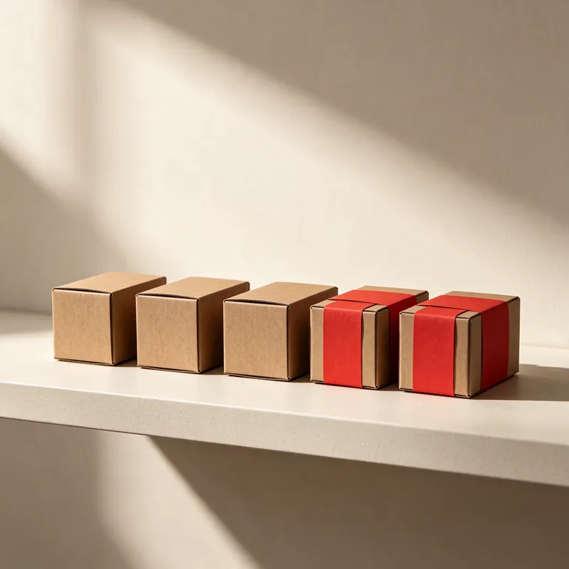

Учебный заказ · 40 фильтров к пятнице
На складе 50. Продать можно 30.
Двадцать фильтров уже обещали другому клиенту. Пока резерв записан в отдельной таблице, агент видит все пятьдесят.

Что на самом деле доступно
Клиент запросил 40 штук
30 → предложить клиенту
Перевозчик подтвердил пятницу. По правилам продаж агент вправе предложить частичную поставку.
10 → запросить закупки
Срок пополнения неизвестен. Закупщик уточняет дату у поставщика.
«К пятнице можем доставить 30 фильтров из 40. Подойдёт частичная поставка?»
Какие данные пришлось связать
- Продажи · артикул
- Связали «наш обычный фильтр» с конкретной позицией каталога.
- Склад · резерв
- Закрепили резерв за заказом. Он сразу уменьшает доступный остаток.
- Логистика · рейс
- Подтверждённые количество и дата относятся к тому же заказу.
Что измерить на пилоте
- Минуты ручной работы на заказ
- Доля заказов без уточнений
- Число исправленных обещаний по срокам